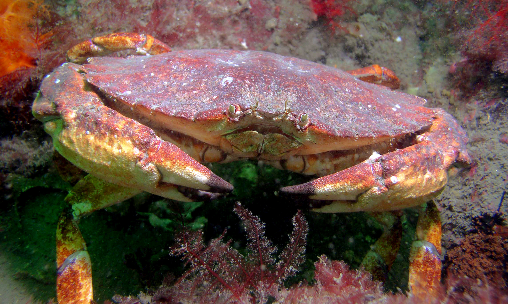

Red rock crab
Also known as cancer productus. This crab usually grows to 6" at most. Cancer productus can be found along the west coast of North America, from California to Alaska. Identifying an adult red rock crab is easy because of it's large black tipped claws and brick red carapace. Red rock crab taste great but are usually thrown back in the water by trappers because it's close cousin, Dungeness also tastes great and has much more meat. A red rock crab typically eats barnacles which it crushes with it's claws.

Wikipedia
- Alaska
- Washington
- Oregon
- California
"I taste terrible. Don't eat me!" ~RIP random red rock crab